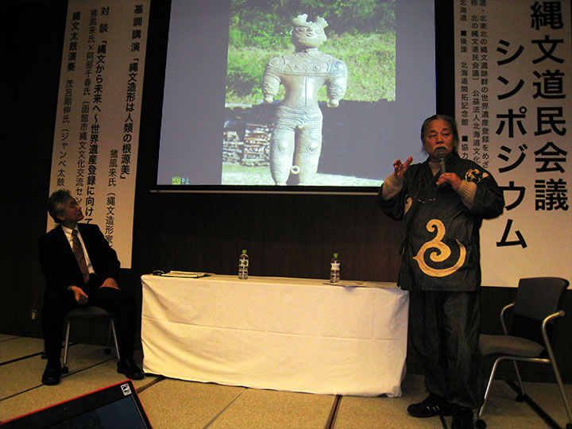
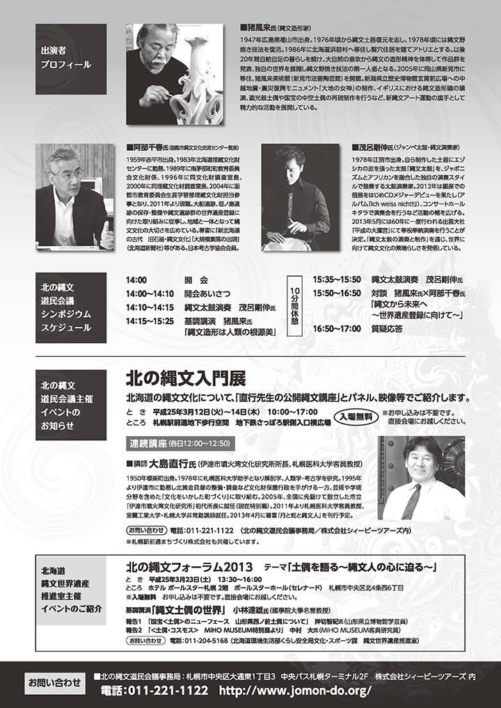

― これまでのイベント（記録） ―
|  | |
 |
 |
【講演内容全文】
→ 2013年3月2日 道民会議シンポジウム／基調講演 猪風来氏 (北の縄文道民会議 公式サイト)
→ 道民会議シンポジウム、無事終了しました (北の縄文道民会議 公式サイト)
→ 北の縄文道民会議シンポジウム 開催の模様 (北海道庁 公式サイト)
第一部では『縄文造形は人類の根源美―新しい現代縄文芸術の発展のために―』というテーマで猪風来が
基調講演をおこないました。
第二部では『縄文から未来へ～世界遺産登録に向けて～』というテーマで、阿部千春氏
（函館市縄文文化交流センター館長）と猪風来の対談。
また茂呂剛伸氏（ジャンベ太鼓・縄文演奏家）による縄文太鼓演奏もおこなわれました。
 |
|  |
| 【『北の縄文道民会議シンポジウム』チラシ】 →（表面）PDF版を開く →（裏面）PDF版を開く |